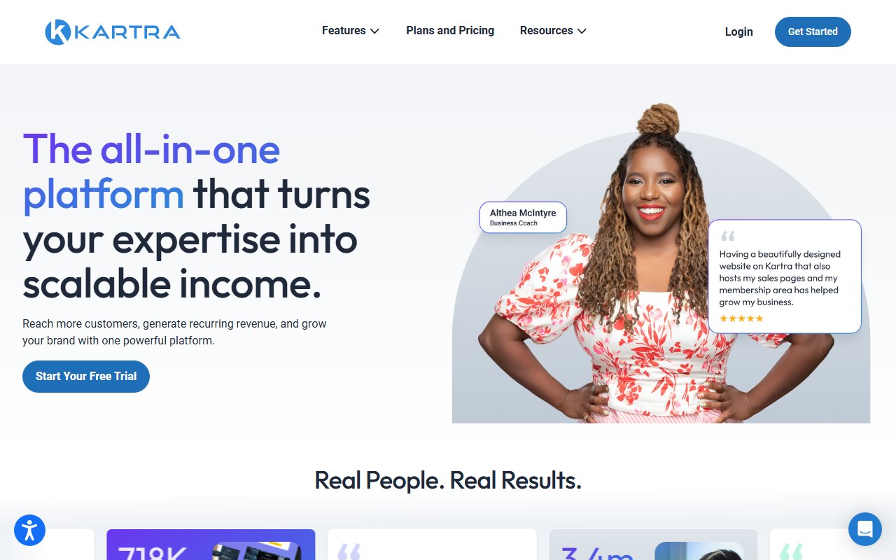

MAツール比較【2026年】中小企業向け海外製ツールの選び方と注意点
MAツールは、見込み客へのメール配信や育成を自動化する仕組みです。営業への引き継ぎも支えます。少人数の会社でも、見込み客を継続してフォローできます。
海外製は、連絡先数や配信数、機能上限で料金が変わります。この記事では料金と無料枠を比べ、日本語対応と契約時の注意点も扱います。
海外製MA・周辺サービス4つの料金と無料枠
- Brevo：$0〜／期限なしFree／配信量別
- ActiveCampaign：$15〜／14日無料体験／連絡先数別
- Kartra：$59〜／無料体験／プラン別
- WebinarJam：$39〜／14日間$1／プラン別・年払い
迷ったらBrevoがおすすめです。期限なしのFreeでは、1日300通まで配信できます。登録できる連絡先は最大100,000件。オートメーション対象は2,000件までで、Starterは月$9からです。
日本語ページには、Freeの登録方法とメール配信・CRMの機能が掲載されています。
MAツールが必要か、メール配信やCRMで足りるかを見極める
一斉配信だけならメール配信サービス、商談管理だけならCRM・SFAで足ります。顧客の行動に合わせて継続的な育成シナリオを動かす段階で、MAが候補になります。
MAとメール配信サービスの違い
メール配信サービスはリストへの配信が中心です。MAなら、資料請求やメール内の操作に応じて、次の案内を変えられます。
- リスト配信：同じ内容を一斉または予約して送る
- 行動トリガー：特定の行動をきっかけに処理を始める
- リード育成：反応に応じて案内の順番や間隔を変える
ニュースレターを送るだけなら、複雑なシナリオは不要です。自動化する業務がまだ決まっていないなら、まずはメール配信サービスで十分です。
MAとCRM・SFAの違い
CRM・SFAは、顧客情報や案件を管理し、営業側が商談の進捗を追うために使います。MAが担うのは、商談前の見込み客に情報を届ける役割です。
両方を使う場合は、「どの反応があれば営業へ渡すか」「顧客情報をどちらで更新するか」を決めます。重複したデータを見つけた場合の担当者も決めておきます。
販売ファネル型とウェビナー型をMA本体と混同しない
販売ファネル型は、集客ページから決済までをまとめます。ウェビナー型は、登録受付からライブ配信へつなげ、開催後の案内も扱うサービスです。
日常のリード管理が必要なら、BrevoやActiveCampaignを先に比較します。販売導線やウェビナーが主目的の場合だけ、KartraやWebinarJamも候補に加えます。
MAツールを比較するときの5つのポイント
月額だけで決めると、実際の負担を見誤ります。配信規模と自動化の上限を基準にし、担当人数や日本からの契約条件も比べます。連絡先数と配信数のどちらが増えるかによって、安いツールは変わります。
連絡先数と月間配信数
リストが増えたとき、連絡先数と配信数のどちらを基準に料金が上がるかを確かめます。半年後の登録数に加え、1人あたりの月間配信数も見積もります。
シナリオ自動化の上限とCRM連携
まず、1本のシナリオに必要な処理を書き出します。Starterでは、自動化1つにつき5アクションまでです。CRM連携では、顧客情報をMAからCRMへ送るのか、反対向きにも同期するのかを確かめます。
ユーザー数と運用担当者の負担
設定から結果を見るまでの作業を、誰が担当するか決めます。原稿作成と配信承認の担当も明確にします。Brevoでは、Freeを使えるのは1ユーザーだけ。専任者がいない会社はシナリオを一つに絞り、毎月改善するのが現実的です。
日本語UI・サポート・支払い方法
「英語の設定画面と窓口でも運用できるか」を考えます。日本語の紹介ページがあっても、管理画面やサポートまで日本語とは限りません。
解約とデータの持ち出しやすさ
契約前の段階で、解約時に書き出すデータと形式を確認します。移行するのは、連絡先と配信停止情報です。同意記録やシナリオ、配信結果も対象になります。
海外製MAと周辺サービス4つの特徴
BrevoとActiveCampaignはMAの候補です。KartraとWebinarJamは、販売ファネルやウェビナーが必要な場合だけ検討します。4つを同じ機能カテゴリとして順位付けすると、自社の目的に合うサービスを選びにくくなります。
Brevo：無料枠からメール配信と自動化を始めたい方向け

日本語ページには「無料登録」と「デモを試す」の入口が表示されています。
Brevoは、配信量を抑えて自動化を試したい会社に向きます。Freeでも、登録できる連絡先は最大100,000件です。ただし、送信は1日300通まで。オートメーションの対象も2,000件が上限です。リストを保管できる件数と、実際に配信・自動化できる規模は異なります。
有料のStarterは月$9（約1,422円）、Standardは月$18（約2,844円）からです。料金は配信量で変わります。Professionalは月$499（約78,842円）からで、Enterpriseは個別見積もり。Freeアカウントは4か月に一度もログインしないと削除対象になります。検証を中断している間も、アカウントを残すには定期的なログインが欠かせません。
無料枠では、1日あたりの配信数が上限内かを試せます。オートメーション対象は2,000件までです。
ActiveCampaign：自動化1本に6アクション以上必要な方向け

英語ページの上部に「Free trial」と「Demo」の入口があります。
自動化1本が6アクション以上なら、ActiveCampaignのPlus以上が候補です。必要なアクション数がプラン選びの基準で、Brevoとの優劣を示す比較ではありません。試用は14日間で、カード登録は不要。無料で使い続けるプランはありません。契約前に、担当者が設定画面と自動化の作り方を試せます。
料金は、連絡先1,000件、USD・年払い表示で次のとおりです。
- Starter：月$15（約2,370円）から
- Plus：月$49（約7,742円）から
- Pro：月$79（約12,482円）から
- Enterprise：月$145（約22,910円）から
Starterは1つの自動化につき5アクションまでです。Plus以上は無制限なので、必要なアクション数で候補プランが変わります。
トライアルでは、自社で想定する1本のシナリオを作り、5アクションで収まるかを確かめます。
Kartra：販売ページ・決済まで一体化したい方向け

英語ページには無料トライアルのボタンと料金ページへのメニューがあります。
Kartraは、一般的なMAの代わりというより、販売ページと決済を含むファネルをまとめる候補です。最小のEssentialsでは、連絡先500件と月10,000メールまで扱えます。取引手数料は5%。月額に、販売件数に応じて増える手数料を加えて総コストを見積もります。
無料プランはなく、無料トライアルが用意されています。ただし、公式ページ内で期間の案内が一致していないため、適用期間は申込画面で確認してください。
月払いは次のとおりです。
- Essentials：$59（約9,322円）
- Starter：$119（約18,802円）
- Growth：$229（約36,182円）
- Professional：$549（約86,742円）
費用は、月額と取引手数料を合算して判断します。
WebinarJam：ウェビナーを集客導線に組み込みたい方向け
WebinarJamは、ウェビナーを開催し、登録者への案内や開催後の導線を作るサービスです。ライブ配信を見込み客の育成に組み込むときの候補で、日常のメール配信全体を担うMAとは役割が異なります。
14日間のトライアルは$1（約158円）です。有料プランは年払いの月額換算で次のとおりです。
- Starter：$39（約6,162円）
- Basic：$79（約12,482円）
- Professional：$229（約36,182円）
- Enterprise：$379（約59,882円）
Visa、Mastercard、American Expressで支払え、請求書はPDFで取得できます。
ウェビナーの開催が主目的なら、年払いの総額で比べます。月額換算だけを見ても、実際の支払額は分かりません。
料金は月額だけでなく配信規模と機能上限で比べる
表示月額だけでは、実際に払う金額は決まりません。連絡先数や配信量に加え、ユーザー数と機能上限も料金を左右します。支払期間も条件の一つ。円換算は1ドル=158円で計算した目安です。実際の請求額は為替で変わります。
無料プランとトライアルの違い
期限を区切らずに使えるのが、BrevoのFreeです。ActiveCampaignはカード不要の14日間トライアル。WebinarJamには14日間$1のトライアルがあります。Kartraも無料で試せますが、期間は申込画面を見てください。いずれもトライアル終了後の継続利用は有料です。
トライアルでは、少数の連絡先で配信文を作り、自動化を一本動かし、結果を見るところまで終えます。
連絡先数・配信数・ユーザー数で増える費用
- Brevo：Freeの配信量や自動化対象数を超える運用では、利用量に応じた有料プランを検討する
- ActiveCampaign：連絡先数と自動化のアクション上限を組み合わせてプランを選ぶ
- Kartra：連絡先数、メール数、取引手数料を合算して販売規模が増えたときの総額を見る
- WebinarJam：年払いの月額換算と、契約期間の支払総額を見る
月払いと年払い、日本からの決済で確認すること
年払いの月額換算は、次のとおりです。
- Essentials：$52（約8,216円）
- Starter：$99（約15,642円）
- Growth：$189（約29,862円）
- Professional：$429（約67,782円）
月払いとの差と、1年分を先払いできるかの両方で判断します。
Brevoでは、1日に送る通数とオートメーション対象数を基準にプランを選びます。
ActiveCampaignでは、連絡先数と自動化1本あたりのアクション数を同時に比べます。
Kartraでは、連絡先数とメール数を見ます。取引手数料を含む総額を出し、月払いと年払いの差も比べます。
WebinarJamでは、月額換算と契約期間の支払総額をあわせて比べます。
日本から契約・運用するときに確認したいこと
契約前に、管理画面とサポートの対応言語をそれぞれ確認します。請求通貨と使えるカードに加え、請求書の取得方法も調べます。
日本語UIとサポート言語
- Brevo：日本語の公式サイトはありますが、管理画面と公式サポートの対応言語に日本語は含まれません
- ActiveCampaign：管理画面は日本語非対応で、ライブチャットは英語のみです。メールとチケットの日本語対応は公式案内に記載がありません
- Kartra：管理画面は英語のみで、顧客向けページの固定言語一覧にも日本語はありません。サポート窓口の対応言語は公式案内に記載がありません
- WebinarJam：ウェビナーの公開画面は日本語に設定可能です。管理画面と有人サポートの日本語対応は公式案内に記載がありません
トライアル中は、実際の担当者が初期設定から配信結果を見るところまで一通り進めます。
請求通貨と日本発行カード
BrevoとKartra／WebinarJamはUSD建てです。ActiveCampaignの料金画面で選べる通貨は、USD／BRL／CAD／AUD／EUR／GBP。Kartraは米国外で発行されたカードにも対応しています。
- Brevo／ActiveCampaign：カード決済
- WebinarJam：Visa、Mastercard、American Express
この3サービスは、日本発行カードの可否が明記されていません。契約前に、利用するカードで海外オンライン決済が有効かも確かめます。
請求書と税務処理
- Brevo：My planのInvoicesまたはBilling history
- ActiveCampaign：Billing & UpgradeのInvoicesタブ
- Kartra：BillingのMy payment history
- WebinarJam：セルフサービスの請求ポータル
各画面から請求書PDFを取得できます。
請求書を経費処理できることと、日本の適格請求書として扱えることは別です。海外サービス利用料の消費税やインボイスの扱いは、契約前に税理士へ相談してください。
導入・乗り換え前に確認する3つの注意点
MAを切り替える前に、既存リストと配信同意を確かめ、次回請求日も見ておきます。各社のエクスポート対象や形式は契約前に調べ、必要なデータを保存してから旧サービスを解約します。
既存リストと配信停止情報を引き継ぐ
氏名や会社名などの必要項目を対応付け、重複連絡先と古いアドレスを整理します。配信停止情報も移し、送信ドメイン認証と社内アドレスでのテストを終えてから本配信へ切り替えます。
配信同意と個人情報の扱いを確認する
登録経路と同意時の説明を記録し、配信停止をMAと連携先の両方へ反映する流れも決めます。海外サービスへ個人情報を保存する場合は、利用規約とプライバシー関連の案内を読み、自社の手順を決めておきましょう。
解約・ダウングレード前にデータを書き出す
解約前に確かめるのは、次回請求日と契約期間。各社が書き出せる範囲で、連絡先と配信停止情報を保存し、配信結果も残します。返金保証を申請するには、解約とは別に対象条件を満たす必要があります。
- Brevo：いつでも解約でき、現在の請求期間が終わるとFreeへ移行。対象の月払いStarterとStandardは最大3か月休止できる。年払いProfessionalの解約はサポートへの連絡が必要
- ActiveCampaign：Primary AdminがBilling & Upgradeから解約。年契約を月払いしている場合はサポートへの連絡が必要。初回30日間の返金保証は条件付き
- Kartra：いつでも解約可能。30日間の返金保証は解約とは別に条件を読んで申請
- WebinarJam：請求ポータルで将来の請求を止めると、次回支払日まで利用可能。30日間の返金保証は利用条件があり、申請が必要
書き出したファイルを開き、新サービスへ必要な項目を取り込めたら、旧契約を解約します。
MAツール選びでよくある質問
どれを選ぶかは、最初に自動化したい業務で変わります。
無料で使えるMAツールはある？
この記事の候補では、期限を区切らない無料プランがあるのはBrevoです。ほかの3サービスは試用期間後に料金がかかるため、無料運用と有料機能の試用は分けて考えましょう。
ひとり法人でもMAを運用できる？
最初の業務を一つに絞り、毎月の作業時間を確保できるなら候補になります。作業には、原稿作成のほかに配信停止への対応と結果確認が必要です。Brevo Freeは1ユーザーで、担当を分けにくいプラン。今回の4サービスでは、管理画面またはサポートで英語が必要になる場面があります。これらを一人で担えるか、先に判断してください。
KartraやWebinarJamはMAツール？
この記事ではMA本体と同列に扱いません。Kartraは、販売ページ・決済まで含む販売ファネル型です。WebinarJamは、ウェビナー開催とその前後の導線を担う補助候補。継続的なメール配信とリード育成が中心なら、BrevoかActiveCampaignから比較します。
国産MAと海外製MAはどちらが向いている？
日本語の管理画面や国内窓口、円建ての請求を重視するなら、国産MAも比較対象です。英語での設定と外貨決済に対応できるなら、海外製も候補。配信規模と自動化の条件が合うかを見たうえで、担当者が継続して設定を直せるかを優先します。
まとめ：まず配信量と自動化したい業務を決める
無料枠の条件が合うならBrevoがおすすめです。必要なアクション数からプランを選ぶなら、比較の軸はActiveCampaign。販売ファネルが主目的ならKartra、ウェビナーが主目的ならWebinarJamを別枠で検討してください。
候補は、次の3段階で絞ります。
- 現在の連絡先数と、1日・1か月に送る通数を数える
- 最初に自動化する業務を一つ決め、必要なアクション数を書き出す
- 無料枠またはトライアルで、担当者が設定から結果を見るところまで進めるか試す
契約前には、日本語UIとサポート言語に加え、日本発行カードの可否も見ます。請求書の取得方法と解約条件も対象。料金を比べるときは、自社の規模に合うプランと支払期間をそろえます。料金ページの最小額だけでは判断できません。
Brevoは、無料枠が自社の配信量に収まるかを試す候補です。
ActiveCampaignは、トライアルで必要な自動化を組み、候補プランを絞れます。
プラン別の連絡先数と、Essentialsにかかる取引手数料が掲載されています。
StarterからEnterpriseまでの年払い額を比較できます。